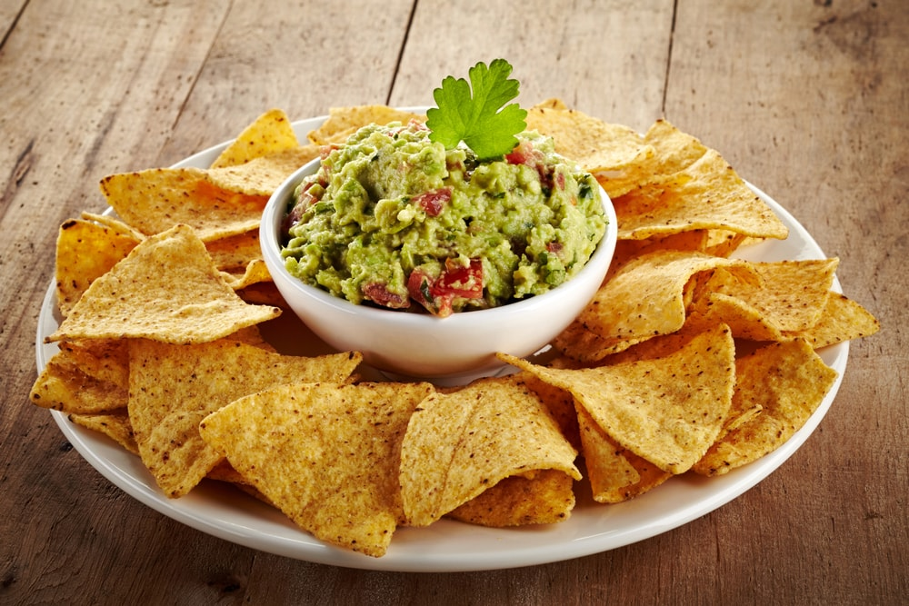
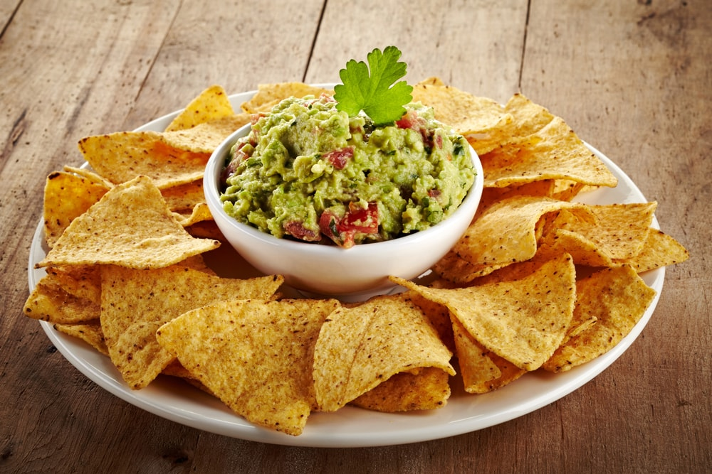

Portfolio
Zweck des Projekts
Ziel des Projekts ist es, zu lernen, wie man eine Webseite für andere erstellt Arten von Menschen Wir müssen aber auch lernen, in Gruppen zu arbeiten und zu organisieren.

Treffen mit dem vierten Jahr
Das Treffen mit der 4. Klasse hat uns sehr gut gefallen, aber wir fanden es sehr lang. Wir haben viel gelernt wie man Salz, Fette usw. reduziert und größtenteils hat es uns sehr geholfen, obwohl es schwer zu ertragen war Alle Notizen. Wir konnten es in den Rezepten anwenden, aber in einigen hat es uns verwirrt wenig. Diejenigen, die uns erklärt haben, waren sehr gut verstanden.

Logo
Das Logo unseres Teams lautet „I-Food“ und hat eine Kochmütze, weil wir dachten, dass dies bedeutete Etwas lustiges aber auch ernstes. Dieses Logo passt sehr gut zu unserem Slogan. Unser Motto lautet: "Essen ist wichtig." Weil wir möchten, dass sie wissen, dass es uns wichtig ist, dass alle gut essen. Wir haben uns für etwas weniger Elegantes entschieden, weil es sich um eine Schulkantine handelt.

Rezeptauswahl
Um die Menüs auszuwählen, nehmen wir a Wenig, weil wir Essen für verschiedene Arten von Menschen haben wollten, aber das ist nicht ähnlich, wie zum Beispiel: Veganer und Vegetarier, aber am Ende haben wir es geschafft. Wir haben sehr abwechslungsreiche Menüs und obwohl sie nicht sehr sparsam sind Sie sind perfekt für jede Art von Person. Diese sind für Bluthochdruckpatienten, für Zöliakiekranke und für Menschen ohne Probleme Wir haben ein sehr reichhaltiges Menü gewählt, das wir international nennen, weil es eine Vielzahl von Lebensmitteln aus verschiedenen Ländern enthält. Um dies zu erreichen, halfen uns die 4. Jungs beim Treffen


 


Video tutorial
Para el video tutorial elegimos el plato nachos con guacamole y nos organizamos un dia en el colegio. Decidimos cuando, donde y como hacerlo. Lo hicimos en la casa de Albertina Z. el domingo 3/11. Sacamos fotos de las etapas de la preparación, grabamos una voz en off en inglés y colocamos subtitulos en español. Para editarlo usamos la aplicación Video Maker. Primero juntamos los ingredientes y nos pusimos a cocinar. Mientras sacabamos fotos íbamos preparando el plato. Cuando lo terminamos, lo editamos. Colaboramos: Valentina J., Albertina Z., Martin J. y Joaquín G. (La casa, el limón, el tomate, las paltas, la sal y la pimienta y el cilantro de Albertina, el celular de Valentina, nachos de Martin y cebolla de Joaquín).
Beschreibung der Berechnung von Kosten und Endpreisen
Drei Mitglieder der Gruppe erstellten zwei Tabellenkalkulationen und die vierte drei. Wir haben es am 11.12 mit Excel gemacht. Excel wurde mit allen Mitgliedern der Gruppe geteilt. Jeder wählte ein Rezept, wir schrieben die Zutaten Im Excel suchen wir in Mercado Libre, Carrefour Digital oder Coto Digital die Preise der Zutat und schreiben sie ein der Tisch Wir hatten ein Treffen mit den sechsjährigen Jungen, bei dem sie uns halfen, den Gewinn des Tellers zu berechnen.